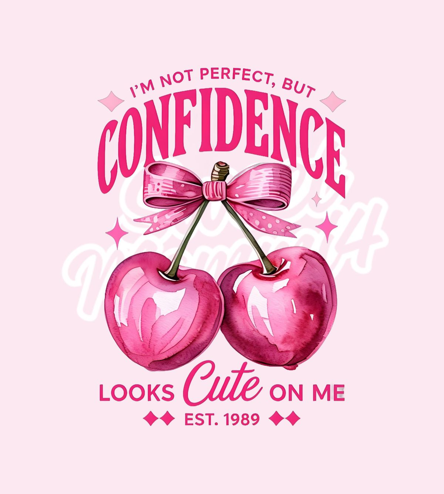
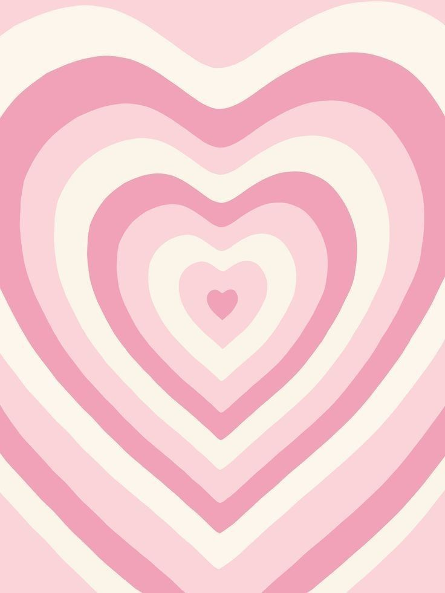
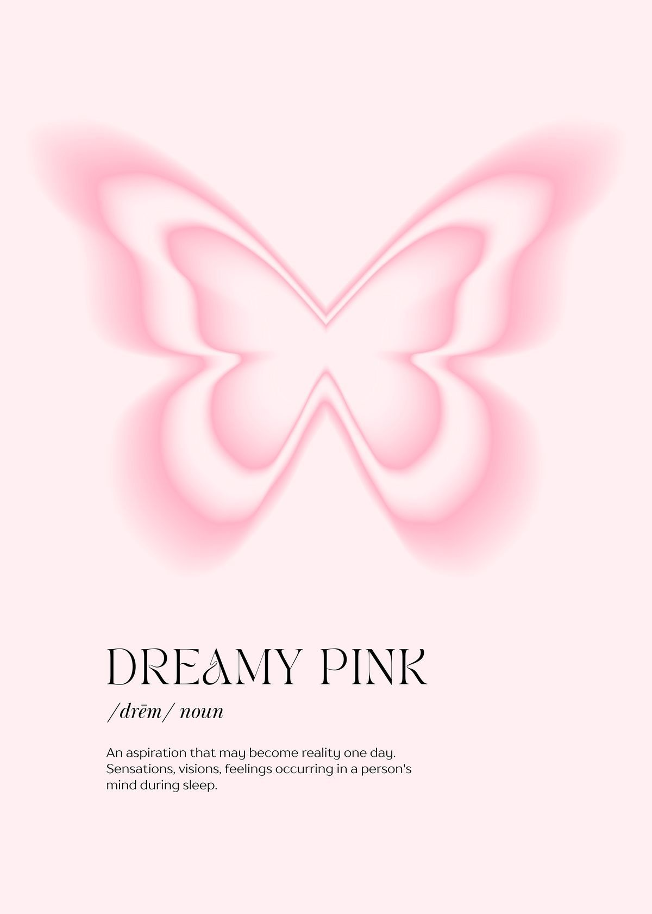
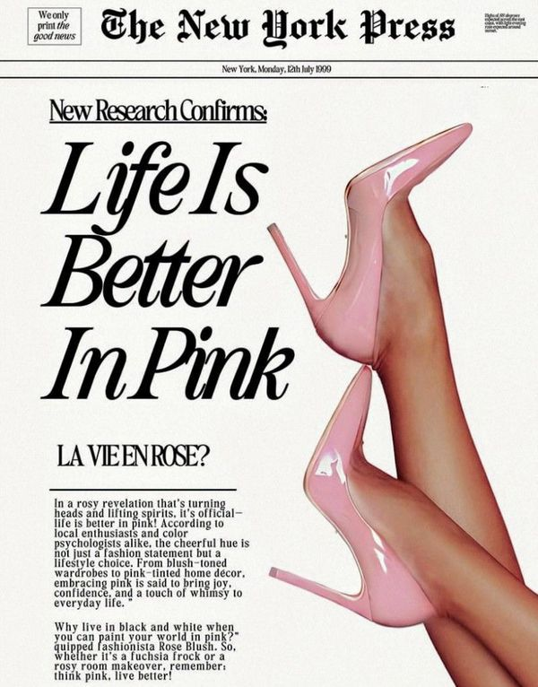

À PROPOS
Mes qualités
- Rigueur
- Autonomie
- Organisation
- Patience
- À l’écoute
Mes centres d’intérêt
- Mode
- Photographie
- Voyage
- Création visuelle
Mes inspirations




Mes objectifs
- Développer mes compétences en design
- Créer davantage de projets personnels
- Affiner mon univers visuel
Mes outils
- Canva
- Figma
- Photoshop
- VS Code
J’aime créer des univers doux et harmonieux, où chaque détail a son importance.